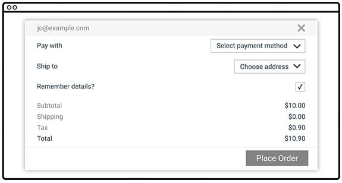
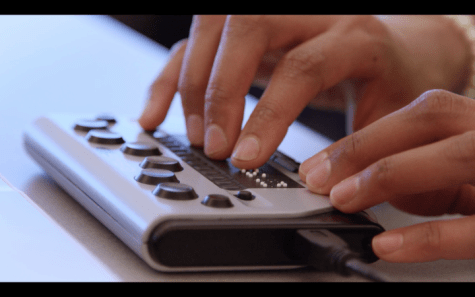

Accesibilidad
¿Qué es la accesibilidad?
Decimos que una página es accesible cuando puede ser utilizada por cualquier usuario, independientemente de su condición, discapacidad, limitación de hardware o software, etc.
Para conseguir esta accesibilidad, esta página ha de ofrecer alternativas a las formas comunes de navegar que tienen los usuarios (por ejemplo, una alternativa al uso del ratón). Esta página deberá ser diseñada evitando utilizar propiedades que puedan suponer una dificultad para algunos usuarios (por ejemplo, el uso de colores con poco contraste entre ellos), o que excluyan a personas con ciertos problemas (por ejemplo, un vídeo sin transcripción no podrá ser utilizado por una persona con problemas auditivos o que, simplemente, no pueda utilizar altavoces / auriculares).
La accesibilidad afecta también al uso de diferentes dispositivos. Una página web diseñada exclusivamente para escritorio podría no ser fácil de usar en un smartphone.
Por ejemplo, este formulario puede ser utilizable para el usuario "común", pero tiene varios problemas e inconvenientes para muchos otros usuarios:
- El texto utiliza colores con poco contraste entre ellos, por lo que usuarios con mala visión podrían tener dificultades al leerlo.
- La distancia entre las etiquetas y los valores es muy amplia, por lo que cuesta saber cuál se refiere a cuál.
- La etiqueta "Remember details?" no está asociada al checkbox al que se refiere, así que no se puede pulsar en ella para cambiar su valor.
En contraste, este formulario contiene la misma información, pero presentada de una forma que no causa problemas ni inconvenientes a ningún usuario.
Pautas generales
A las pautas generales para que una página sea accesible se les llama "POUR", por sus siglas en inglés (Perceivable, Operable, Understandable and Robust):
- Perceptible (perceivable): Cualquier usuario debe ser capaz de percibir el contenido. El contenido debería poderse ver fácilmente por cualquiera que pueda ver, aunque su visión sea mala. El contenido debería poderse además oír por personas que no pueden ver.
- Operable (operable): Cualquier usuario debe ser capaz de ver todo el contenido y navegar por el mismo. Una etiqueta que solo se ve al pasar el ratón por encima, por ejemplo, no es accesible, ya que una persona utilizando un smartphone no podría verla.
- Entendible (understandable): Cualquier usuario debe poder entender la página. La interfaz debe ser intuitiva, y el contenido debe evitar utilizar lenguaje extraño o arcaico.
- Robusto (robust): Cualquier navegador común debe ser capaz de mostrar el contenido correctamente, y los programas especializados para discapacitados deben ser capaz de entender la página.
Diversidad de usuarios
Internet es utilizado por multitud de usuarios, con distintas capacidades y equipo técnico.
Por ejemplo, algunos usuarios tienen discapacidades visuales. Estos se dividen en varias categorías: desde personas invidentes, hasta personas que puede ver, aunque con dificultad. Las personas invidentes necesitan un lector de pantalla o un dispositivo braille para acceder al contenido, mientras que personas con la vista deteriorada puede que sean capaces de navegar sin problemas si la página ofrece el contenido de forma clara y con un buen contraste de colores. Una persona daltónica puede navegar una página sin problemas, pero le será difícil entender un gráfico o una tabla donde la información se transmite a través del uso de colores.
Incluso para personas sin discapacidades físicas, visualizar una página puede suponer un reto en algunos casos. Por ejemplo, acceder a internet desde un portátil en el exterior, en un día soleado, se convierte en una tarea difícil si la página no utiliza un buen estilo que contraste el fondo con el contenido.
Otras personas tienen discapacidades motoras. Estas personas pueden tener dificultades a la hora de utilizar las manos y los brazos para utilizar el ratón, o incluso estar paralizados. Para estas personas, hacer click sobre un diminuto cuadro para marcar una opción requiere un gran esfuerzo, o es directamente imposible. En su lugar, necesitan poder navegar la página con teclado, utilizando teclas como TAB o ENTER para navegar hasta dicho cuadro y marcarlo. En el caso de personas con parálisis, la navegación no es posible ni siquiera con teclado, por lo que dependen de dispositivos de rastreo ocular (eye tracking) para navegar por la página simplemente moviendo los ojos. Si una página no está adecuada correctamente, el software de estos dispositivos no podrá entenderla y será muy difícil navegar por ella.
Al igual que en el caso anterior, estos problemas pueden afectar a personas sin discapacidades. Por ejemplo, un usuario que se ha partido un brazo puede necesitar utilizar, temporalmente, el teclado para navegar por la página.
Algunas personas tienen problemas auditivos. Desde personas sordas, hasta personas con mal oído. Este problema es común además en personas mayores, por lo que una cantidad importante de los usuarios de una página necesitarán asistencia con este tipo de problemas.
Una solución sencilla es ofrecer alternativas visuales (texto) al contenido que debe ser oído. Así, subtitulos para un vídeo o una transcripción de una conversación pueden ayudar a estar personas. Estas alternativas tienen el beneficio añadido de ayudar a personas que no hablan muy bien el idioma utilizado en el contenido.
Una página debe, además, evitar utilizar sonidos como único medio para transmitir información. Por ejemplo, un botón que hace un sonido para comunicar que se ha activado no es accesible, ya que cualquier persona que no pueda oírlo no tiene forma de saber que ha sido activado.
Como siempre, estos problemas pueden afectar a personas sin discapacidad. Una persona en un ambiente ruidoso, o en un ambiente donde no debe hacer ruido, también tendrá problemas para acceder a contenido auditivo que no ofrece alternativas visuales.